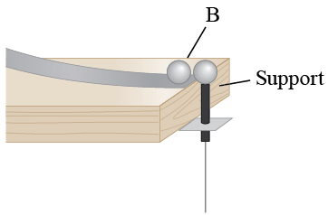

Elastic Collisions
Introduction
In general, when two objects collide, some portion of the initial kinetic energy is converted to other forms due to the deformation of the objects and the friction between them during the collision. If the collision is elastic, all the energy expended in changing the shape of the objects during the collision is recovered, no friction work is done during the collision, and the kinetic energy of the system of the two objects is the same after as before. No collision between macroscopic objects is precisely elastic, but for collisions between rigid objects the collision can be very close to elastic and kinetic energy comes very close to being conserved. When an object of mass m moving with velocityv1i
collides with a second object of the same mass that is initially at rest, conservation of kinetic energy says that
where v1f
is the final velocity of the incoming object just after the collision and v2f
is the velocity of the second object (the target) just after it is struck by the first object. Note that kinetic energy is a scalar and that it depends only on the speed of the object and not on the direction of its velocity.
Conservation of linear momentum applied to this collision says that
If we use a coordinate system where the +x-axis is in the direction of v1i,
then conservation of linear momentum can be expressed as two component equations:
The velocities of the two objects before and after the collision in the glancing type collision we are considering are shown in Figure 1.

Figure 1
Objective
To verify conservation of linear momentum and conservation of kinetic energy in an elastic collision.Apparatus
- Grooved track
- Large sheet of paper (2 ft × 2 ft)
- Meterstick
- Compass
- Steel balls (2)
- Carbon paper sheets (2)
- Protractor
Procedure
Please print the worksheet for this lab. You will need this sheet to record your data.
g = 9.80 m/s2.
Use the meterstick to measure the vertical distance from the bottom of the ramp to the floor and enter your result in your worksheet.
Taking Data
1
Tape a large (2 ft × 2 ft) piece of paper to the floor near the table so that it is centered under the apparatus and extends several inches back under the edge of the table. Be sure that the paper does not move during the experiment.
2
Take one of the steel balls and hold it at the top of the grooved track at point A (Figure 2). This is the "incoming ball". Loosen the lock nut on the target support and move it to the side so that the incoming ball will not strike the support as it leaves the track and falls to the floor. Release the ball and note where it strikes the paper that was placed on the floor. Place a piece of carbon paper face down at the approximate point where the ball landed. Release the ball from the top of the track six times. Be sure it strikes the carbon paper and leaves a mark on the paper underneath each time.
![A curved ramp is positioned over a sheet of paper lying flat. The ramp begins at a point labeled A, drops steeply, then flattens out to the right and ends at a point labeled B. The block supporting point A is about half as tall as the block supporting point B is long. Attached to the block, there is a support under and just to the right of the point B where a string drops down to a point O on the sheet of paper. Directly under point B is a point on the paper labeled O_0. Making a small triangle to the right of the ramp's path with O and O_0 is a point on the paper labeled O_T. An arrow on the paper leads away from point O in the direction of the ramp's trajectory to a point labeled I_0. To the left of I_0 and not quite as far away from the ramp is a point labeled I, and to the right of I_0 and about the same distance as point I is a point labeled T. The points I, I_0, and T all have curved dashed lines leading from the support down to the page, dropping steeper as they get close to the surface of the page.](images/figure4-2.png)
Figure 2
3
Remove the carbon paper and surround the six dots with a very lightly drawn circle. The circle does not need to be exact; it will only be used to temporarily distinguish these marks from those made later in the experiment. Label this set of points I0.
4
Move the target support so that it is directly in the straight path of the incoming ball. The support must be centered exactly along the axis of the track. Lower the plumb bob (by adjusting the string) until it just touches the paper. Mark its position on the paper with a dot (darken the point with a pencil if necessary) and label it O. Now move the target support slightly out of the straight-line incoming ball's path to allow for a glancing collision. Make sure the two balls will collide at the same height (as shown in Figure 3), adjusting the height of the target ball using the screw it is placed on if required.

Figure 3
Do a few dry runs (without placing the carbon paper) and adjust the target support such that after colliding, both balls (incoming and target) end up roughly halfway down the sheet of paper. (Look at Figure 4 as an example.) Clamp the target support in place by tightening the lock nut underneath it.
Place both carbon papers on the sheet so that each ball lands on one of them after colliding. Repeat six times. Remove the carbon paper. Draw a light circle roughly around each collection of points. Label the one produced by the target ball T and the one produced by the incoming ball I.
![There are five labeled objects inside a square. Near the middle of the square on the left side is a single point labeled O. Slightly below and to the left of O is a single point labeled O_T. Near the top of the square toward the middle is a group of six points surrounded by a light circle labeled I. Near the middle of the square toward the right is a group of six points surrounded by a light circle labeled I_0. Near the bottom of the square toward the middle is a group of six points surrounded by a light circle labeled T.](images/figure4-4.png)
Figure 4
5
In order to find the position of the target ball before the collision, lower the plumb bob on the target support until its point almost touches the paper. Put a mark on the paper directly under the plumb bob and label it OT. Your sheet should like Figure 4.
6
Have the lab instructor check the large sheet of paper before it is removed from the floor.
7
Replace the two steel balls in their holders in the grooved track apparatus and remove the large sheet of paper from the floor. Be sure to remove any masking tape left on the floor.
Data Analysis
1
Using the compass provided, draw circles that enclose the sets of points labeled I, I0, and T. Clearly indicate the center of each circle. From here on, the labels I, I0, and T will refer to the center of the respective circles.
2
Draw a straight line from point I0 (the center of the circle) to point O and extend it back several centimeters past O. Draw a straight line from T to OT and extend it back beyond OT until it intersects the extended OI0 line. Label the point of intersection O0. This is the position of the incoming ball just when it collides with the target ball. Your paper now should look like Figure 5. The figure shows just the centers of the circles, not the individual landing points.
![There are six labeled objects inside a square. Near the middle of the square on the far left side is a single point labeled O_0. Slightly below and to the right of O_0 is a single point labeled O_T. A single point labeled O is located slightly above and to the right of O_T such that O is roughly horizontal with O_0. Near the top of the square toward the middle is a circle labeled I with a single point at its center. Toward the right side of the square roughly horizontal with O_0 and O is a circle labeled I_0 with a single point at its center. A straight line connects O_0, O, and the point inside I_0. Near the bottom of the square toward the middle is a circle labeled T with a single point at its center. A straight line connects O_0, O_T, and the point inside T.](images/figure4-5.png)
Figure 5
3
Measure the distance between point O0 and the center of the circle I0 that surrounds the points where the ball landed. This is the horizontal range of the ball where there is no collision. Record your result (in meters).
Use a projectile motion kinematic equation for the vertical motion to find the time t that the ball is in the air, from when it leaves the track until it strikes the floor. Since the collision affects only the horizontal components of velocity, this is also the time in the air of both balls after the collision.
Use the horizontal range you measured and the value of t you calculated in a projectile motion kinematic equation for the horizontal motion to find the speed of the ball just as it leaves the track. This also the speed v1i
of the incoming ball just before the collision.
4
Measure the distance between the point O0 and I, the center of the circle where the incoming ball landed after the collision. This is the horizontal range of ball 1 after the collision.
Use this distance and the value of t to calculate v1f, the speed of ball 1 just after the collision.
5
Measure the distance between the point OT and T, the center of the circle where the target ball landed after the collision. This is the horizontal range of ball 2 after the collision.
Use this distance and the value of t to calculate v2f, the speed of ball 2 just after the collision.
6
Use coordinates where the x-axis is along the line that connects O0 and I0. With a protractor, measure the angle θ1 between this x-axis and the line that connects O0 and I. (See Figure 6.) Record your result as a positive number.
θ1 gives the direction of v1f relative to the x-axis.
![There are six labeled objects inside a square. Near the middle of the square on the far left side is a single point labeled O_0. Slightly below and to the right of O_0 is a single point labeled O_T. A single point labeled O is located slightly above and to the right of O_T such that O is roughly horizontal with O_0. Near the top of the square toward the middle is a circle labeled I with a single point at its center. A dashed straight line connects O_0 and the point inside I. Toward the right side of the square roughly horizontal with O_0 and O is a circle labeled I_0 with a single point at its center. A straight line connects O_0, O, and the point inside I_0, making an angle Theta_1 with the line connecting O_0 and the point inside I. Near the bottom of the square toward the middle is a circle labeled T with a single point at its center. A straight line connects O_0, O_T, and the point inside T, making an angle Theta_2 with the line connecting O_0 and the point inside T.](images/figure4-6.png)
Figure 6
Measure the angle θ2 between the x-axis and the line that connects OT and T. Record your result as a positive number.
θ2 gives the direction of v2f relative to the x-axis.
Test of Conservation of Kinetic Energy and Linear Momentum in the Collision
Now we have all the data we need to test conservation of kinetic energy and linear momentum in this collision.1
Use your data to calculate Ki, the initial kinetic energy of the system of two balls just before the collision, and Kf, the total kinetic energy of the two balls just after the collision. Give your results in joules.
If the collision is perfectly elastic, Kf = Ki.
Calculate the percent difference between your calculated Ki and your calculated Kf and express your result as a percent. (That is, calculate | |Kf − Ki| |
| Ki |
2
Use your data to calculate pix, the x-component of the momentum of the two balls just before the collision, and pfx, the x-component of the momentum of the two balls just after the collision.
Conservation of momentum says that pix = pfx.
Calculate the percent difference between your calculated pix and your calculated pfx and express your result as a percent. (That is, calculate | |pfx − pix| |
| pix |
3
Since the initial velocity of ball 1 is in the x-direction and ball 2 is initially at rest, the y-component of the momentum of the system is zero. After the collision, the y-components of momentum of each of the two balls are in opposite directions, conservation of momentum says that |pf1y| = |pf2y|.
Use your data to calculate |pf1y| and |pf2y|, the y-components of momentum of each ball after the collision.
Calculate the percent difference between your calculated |pf1y| and your calculated |pf2y| and express your result as a percent. (That is, calculate | ||pf2y| − |pf1y|| |
| pf1y |